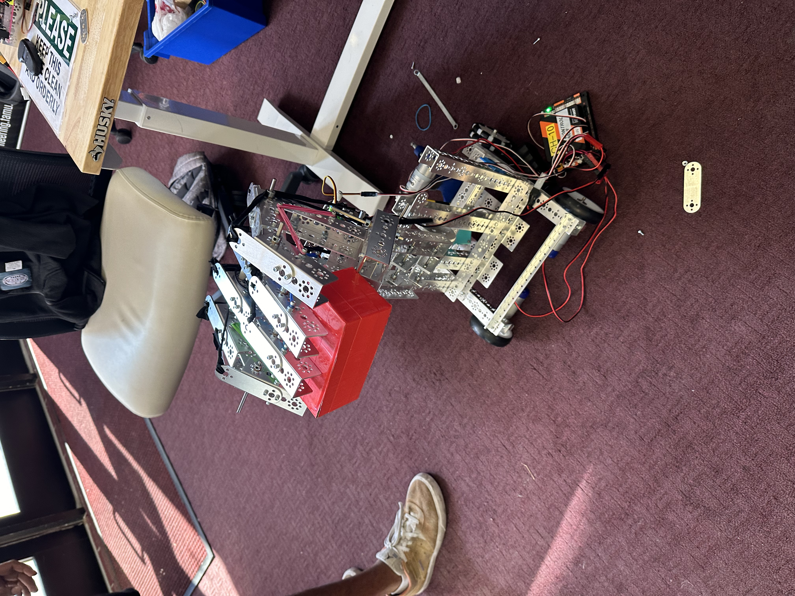
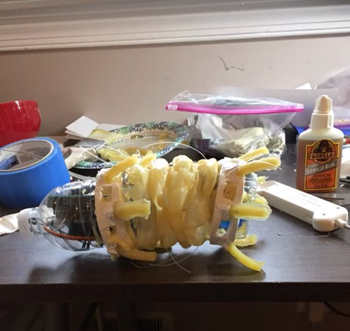
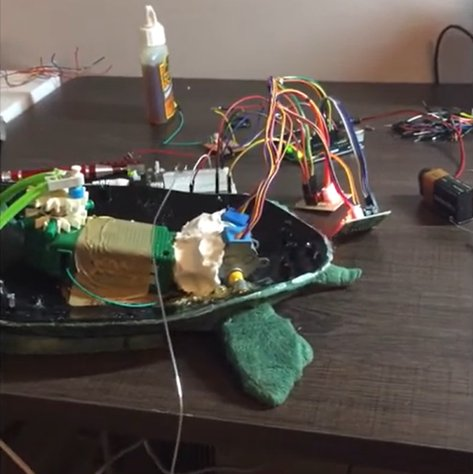

Random
Personal projects, tinkering, and other things I’ve built that didn’t fit anywhere else on the site. Not engineering deliverables. Things I did for fun.
Humanoid hand manipulation robot
Python · ToF sensors · servo control · MXET 250 · 2024
Mobile robot with a 5-finger humanoid hand for autonomous maze navigation, object manipulation, and color sorting. String-actuated fingers driven by continuous servos with rubber band tension for grip. 4-bar arm linkage with a 4.167:1 gear ratio for lifting. Autonomous navigation compared left and right ToF sensor readings with a 10cm buffer to identify turn opportunities.
I worked on the navigation algorithm and the mechanical arm. The arm had a tipping problem that we solved with counterweight placement and rubber band tension.

Soft robotics worm
Arduino · servo motors · bioinspired design · liquid latex fabrication
Bioinspired peristaltic locomotion robot designed to navigate constrained pipe environments, modeled on earthworm locomotion. Two servo motors connected via hot glue sticks as the contractile element. Anchor segments made from molded liquid latex setae inspired by earthworm anatomy. Arduino coordinates the actuation sequence: rear anchor engages, body contracts, front anchor engages, rear anchor releases, body extends. Achieves forward locomotion on inclines up to 60 degrees.

Demo: youtu.be/TWmMyu6sbFI
RC animatronic turtle
Arduino · steppers · relay control · hardware reverse-engineering
Toy turtle with independent flipper actuation, driven by reverse-engineered RC car electronics. I pulled four digital control signals off an RC car PCB and fed them to an Arduino, then drove the front flippers with a K’Nex motor through a relay and the rear flippers with individual stepper motors. Hybrid actuation because the front flippers needed torque and the back flippers needed articulation.

Demo: youtu.be/-LuXjDbVeh0